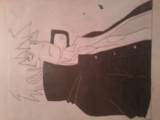
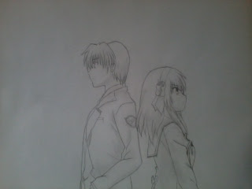
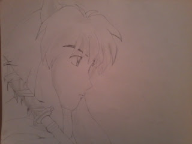

Besides watching anime and reading manga, I love reading long fiction novels. Here are some of the series I've finished of:
I used to love drawing and writing stories. So one day I decided to adventure into drawing anime. I could sketch basic stuff, but never had the courage to color them. Here are a few images. Ignore the rotated Naruto.
  